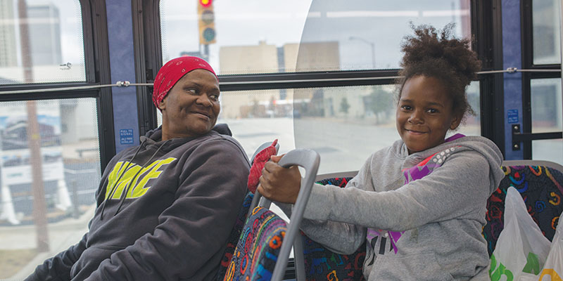
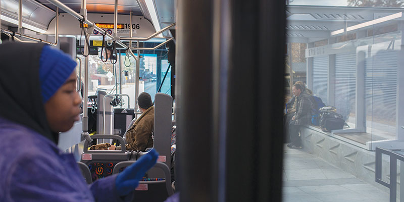

Radical routes
Testing out Tulsa’s new Aero rapid transit

City officials talked big talk back in January when they unveiled the new Bus Rapid Transit system that began operation Nov. 18 along Peoria Avenue.
The word “game-changer” appeared in the Tulsa World’s coverage of the city’s announcement, just a paragraph before Tulsa Transit general manager Ted Rieck was quoted saying the new system, branded Aero, marked the “first step in a transformation for Tulsa Transit.”
Mayor G.T. Bynum got in on the action as well. “Imagine what Tulsans might step up and want to do around public transit if all of a sudden they could see what it was like to have public transit as a vehicle of choice in our city,” he said, after acknowledging that historically the bus served as Tulsans’ transportation option of last resort.
Mayor Bynum’s proposal was nothing if not provocative. The bus, a “vehicle of choice” in Tulsa? I decided to put that claim to the test.
* * *
Brand name
First, some facts about the new Aero rapid transit system are in order. For starters, it’s not independent of the Tulsa Transit system. Aero’s official name is Route 700. It’s just branded distinctly from the regular Tulsa Transit system with Aero-wrapped buses and two sleek, new bus stop designs. If you check the system map on the Tulsa Transit website, it’s marked as the 700. In the time I spent riding it, drivers used the terms Aero and 700 interchangeably. (They also answered about a zillion other questions from me and my fellow riders, bless them.)
I should also point out that the new bus stop design is just as functional as it is aesthetically pleasing. The stations are raised to help passengers using wheelchairs or walkers board the bus without hassle. And the wide aisles allow them to get to a secure spot at the front of the bus without having to fold up a walker. Drivers also get up to help fasten passengers’ wheelchairs to their secure holds.
The Aero runs north-south along an 18-mile stretch of Peoria Avenue, with a short loop into downtown and turnarounds at 54th Street North and the intersection of 81st Street and Lewis Avenue South. (Astute Tulsans might note that Peoria Avenue merges with Riverside Drive just before 71st Street.) On weekdays during peak travel times, Aero bus stops are serviced every 15 minutes. Outside peak hours, they’re serviced every 20.
For those unfamiliar with Tulsa Transit, that quick turnaround is a big deal. In fact, it’s a really big deal. I talked to many seasoned bus riders for this article who characterized the regular bus transit system as spotty, slow and unreliable, particularly on nights and weekends.
In order to run faster, the Aero makes fewer stops along its route. While a traditional Tulsa bus route might have as many as four stops in a single mile-long city block, the Aero averages about two. This is a significant change, with a meaningful trade-off that I would characterize as “quicker service, if you can get to it.”
This brings us back to Peoria Avenue. In the big Aero rollout, the city keeps citing two particular statistics about the street: One in five Tulsans work within a mile of the route, and one in seven Tulsans live within a mile of it.
Like a baby transfixed by a mirror, I recognized myself in the numbers. “So why,” I wondered, “is the city trying to get me to ride the bus to work?” There was only one way to find out.
Rubber, meet road
I rode the Aero about a dozen times over a nine-day period, committing to the full-on work commute on three occasions. The fastest one-way commute—for which I rode my bike to the bus station—took 32 minutes. The slowest—for which I walked—took a full hour.
I live in Heller Park, about nine-tenths of a mile from the 56th Street bus station, so my refurbished Raleigh Technium 460 turns a 16-minute walk into a 4-minute ride. With the time it saves me getting off the bus and into my office, doubled by the return trip, that bike translates into about 30 minutes saved each day, minimum. It’s critical.
After hopping on at the 56th Street stop on my first morning ride northbound, I see a familiar face. My neighbor, Jarrel Wade, boards at 45th Place South. His wife dropped him off at the station so he could ride downtown to work at the Tulsa Regional Chamber. He says he likes having the time to check his email on the way in, even if it’s less convenient than driving himself.
On a subsequent Saturday morning ride, I notice a passenger carrying her lunch box board a few stops after me. Her name is Amanda Coleman and she’s also on her way downtown to work a day shift at Central Library. She tells me that she went to grad school in Oregon, where she often rode the bus to get around, but she only started riding Tulsa Transit because of the new Aero route.
“I don’t have to deal with the hassle of parking and driving,” Coleman said. She too lives off of Peoria, near the route. Another one of those one-in-seven-slash-one-in-fivers.
“It’s been great so far,” Coleman said. “The buses are nice and they’re always on time. And it’s quick. It doesn’t take me longer to get to work than if I drove, so I really appreciate that.”
You can always go downtown
Coleman and I both depart at the Denver Street station, downtown’s central bus hub, around 8:15 a.m. There I hang around for a while looking for passengers to talk to. It’s overcast and cold, about 35 degrees, but the wind is down. One man waiting on the Aero looks at me skeptically when I tell him I’m working on a news story and declines to be interviewed.
Next I meet Alyssa Whisner who’s waiting for the 140 route to take her home to east Tulsa after working a late-night shift in concessions at the BOK Center. She overnighted at a friend’s place downtown, which she often has to do because bus service gets spotty late at night.
“A lot of the time I can walk from my house down here faster than the bus comes,” Whisner said. “It’s about three or four miles.”
Whisner grew up in Tulsa but recently moved back home after spending 15 years in Denver where she rode the bus regularly. It was a reliable system. The Aero route makes sense to her, but she wishes she could enjoy that same expedience and reliability getting to work from her home near 11th and Yale.
She cites Uber as her other transportation option, though it’s a luxury. “There are people who work on Sunday and there are people who work at night,” Whisner said. I ask if she’d benefit from expanded Aero service that ran east-west and she says yes.
Later I link up with this story’s photographer, September Dawn Bottoms, and we ride north. We meet two veteran passengers, Alfred Wright and his friend Carlos Urosa. They first met riding the bus. Wright says he catches rides with friends when he can and uses Uber sparingly. Too expensive. They’re both new to the Aero route, but they like it. “The seats are comfortable,” Urosa said.
Wright works downtown at the DoubleTree and confirms that the Aero helped him get to work more quickly. Urosa points out that the fewer stops along the Aero route create accessibility issues for some passengers.
Later I meet Dorshell Fletcher, who’s riding the Aero south with her daughter and granddaughters. She rides Tulsa Transit every day to visit family and run errands. She loves the new bus, noting the faster service. “I stay mostly along Peoria so it’s perfect,” Fletcher said. She wants to see more Aero routes and buses.
End of the road
For me, however, the Aero remains something of a curio. I like that riding is inexpensive and reduces my carbon footprint, and checking my email to and from work makes me more productive. But once I’m downtown I’m pretty much stranded there. The thought of planning work trips across town using the transit map is a dealbreaker.
But I can definitely see myself using Aero infrequently. Given Tulsa’s history with public transit, I’d say that’s a game-changer.
* * *
When does Aero bus service start and what time does it stop?
Weekday service starts at 5:20 a.m. and runs until 10:30 p.m. Saturday service is every 20 minutes from 5:20 a.m. to 10:30 p.m. Sunday service is every 30 minutes from 7:30 a.m. to 8:25 p.m.
How often do Aero buses run?
Every 15 minutes during peak hours (6 a.m. to 9:45 a.m. and 3 p.m. to 7:40 p.m.), and every 20 minutes outside of peak hours.
How much does it cost to ride Aero?
It’s currently free. But after Dec. 19, it will cost $1.75 per 2-hour trip. You can buy bus passes at QuikTrip and see all the options for payment at tulsatransit.org/fares-passes.
Does the new Aero route affect some of the old transit routes?
Yes. You can read about those at tulsatransit.org.


.jpg)
.jpg)